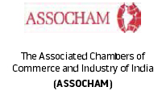
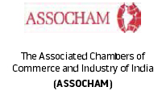

Call Us On: 180011334 | Email: admissions@asiapacific.edu


Meet The Faculty
Asia Pacific Institute of Management
Faculty Profile ( Visiting Faculty )
Attam Prakash
Law & Master Degree in Economics
parkash_a@rediffmail.com
Professor
Prof. Attam Prakash holds a degree in Law & Master Degree in Economics. He did the management Course at the International Marketing Institute of the Harvard School of Business Administration, USA.
Prof. Attam Prakash has to his credit wide practical experience of teaching in business courses in India and abroad mainly at Indian Institute of Foreign Trade(IIFT), trade Development Authority(TDA), Indian Trade Promotion Organization(ITPO), Federation of Indian Chambers of Commerce and Industry(FICCI) and several other business centres in Delhi, Rajasthan, UP, Haryana , and Punjab, and Foreign countries, mainly, in Grenada(West Indies) for 7 years, Belize(Central America) for 4 years, Mozambique(Africa) for 2 years, Geneva( Switzerland), Tokyo(Japan), Seoul(South Korea), Toronto(Canada) and New York(USA); and research on various aspects of International Business for nearly 50 years.
Hitesh Manocha
PGPM from IIM Ahmadabad
manochahitesh@yahoo.co.in
Visiting Professor
Mr. Manocha is alumni of IIM Ahmadabad and have been engaged in Managing Consultancy from 1998 onwards. He Worked as General Manager, Modi Telstra Ltd, on a diversification project. His role was to conceptualise the entire project from scratch, assess its viability, formulate a Business Case. Prior to this he has also worked with Maxworth Orchads, Onida Group of Companies.
Presently he is also engaged as a Visiting Professor in the area of Marketing in various reputed management Institutions.
Shailaja Manocha
PGDBM
shailaja.vm@gmail.com
Visiting Professor
Ms. Shailaja is alumni of Institute of Management Technology(IMT), Ghaziabad. She is teaching regularly at various Management colleges such as FORE, EMPI, Skyline Business School, BULMIN. Her Subject expertise is in the area of Marketing; specifically Marketing Management, Consumer behaviour, Service Marketing, Integrated Market Communication and Brand Management.
Vibha Singh
B. Tech, PGPCME
vibha.singh@asiapacific.edu
Visiting Professor
Ms. Singh is a Technocrat and Management Professional of 9 years of experience comprising 7 years in developing sales, Marketing and Business Development strategies in media industry.
She has founded and successfully running Saanvi Enterprise; a corporate merchandise studio, Generated revenue to 50 lakhs with leading clients like Havells, Bank of America, Pet Fly, ABP News.
Worked as a freelancer in role of design/ brand consultant for Radical Reflex, Art Junction, Tugboat Films, ETV News Network etc.
Also closely worked with CEO , Star News on Strategic Business Decision including a new 24*7 weather channel launch and market expansion in new segments and new geographic.
Manoj Kumar
M.Phil, M.Sc(Computer Science)
manoj@asiapacific.edu
Visiting Professor
Prof. Kumar is M.Phil, M.Sc(Computer Science) and has 10 years of experience in the field of software development. He was associated with IMS, JIMS as a IT faculty before being assigned with Asia Pacific. He was also a faculty mentor of IBM academic intiative.
R.K.Wadhwa
Ph.D
rkwadhwa@asiapacific.edu
Visiting Professor
Prof Wadhwa after superannuation from Indian Institute of Foreign Trade has set up his own consultancy firm viz Global Business Consultant. He did his Doctrate on FDI-Its Role in India's Economy. He has about 30 years of teaching and research experience in the area of International Business.
As a follow up of the India Africa Form Summit held in April 2008 at New Delhi, he was instrumental in designing, developing and conducting Capacity Building Programmes in African Countries, as per the mandate given by Govt of India to IIFT. During his last tenure with Institute he was associated with the successful conduct of International Capacity Building Programmes on International Business in Ethiopia, Arab Republic of Egypt, and Botswana, and was rated one of the best faculty.
Vivek Kumar
B. Tech & MBA from F.M.S.
vivek@asiapacific.edu
Visiting Professor
Prof Kumar is a Management Consultant and providing assistance to industry in improving quality and productivity. He is an Electrical engineer from IIT Roorkee and a MBA from Faculty of Management Studies, Delhi University. In addition he has attended numerous short term courses in India and abroad. Also he is lead auditor for ISP 9001, ISO 14001 and OHSAS 18000 standards.
He has 16 years of corporate experience with Shriram, Tatas and Polar groups where he has managed collaborations, set up new plants and turned around sick units.
He has been a visiting faculty to FMS Delhi University, IIT roorkee, IIT delhu, IMT Ghaziabad, Jama Milia University, Jamia Hamdard University, University of Petroleum and Energy Studies and other leading institutions since 1981.
Sundarmoy Sen
MBA from F.M.S.
sundarmoy@asiapacific.edu
Visiting Professor
Prof Sen is a veteran of 27 years in the field of Advertising, consulting & Academics. He has completed his graduation from St Xaviers College and MBA from Faculty of Management Studies.
He has been associated with IIMs, FMS, BIMTECH as visiting faculty. He has also been associated with some of the top advertising & consulting firms in the world like Frank Simoes, Leo Burnett, Mckinsey, Google, Walmart.
Harbinder Singh Narula
PGDBM
harbinder@asiapacific.edu
Visiting Professor
Mr. Harbinder is a business development professional qualified with 19 years of experience with major concentration in Telecom VAS, Consumer Internet and its domain specific application. He has held challenging roles with established global organizations like Google, Times Group, Buongiorno as well as with a key position in startup venture like aryty. His most recent exposure was an entrepreneurial role where he co founded Wonder Doctor and offered consulting to E-Commerce & Media companies overseas.
Mr. Harbinder in his most recent stint kick started an internet venture that focused on an online healthcare product which was funded by revenue from consulting services to overseas clients from UK, Africa, Middle East and USA. He is also Founder member of Google's business operations in India, where he started the business development function for Google in India and then led content Partnerships for Web & Mobile.
Dr. Asha Jain
D.Litt & Ph.D
asha.jain@asiapacific.edu
Visiting Professor
Dr. Jain is a D.Litt & Ph.D in English Literature from Allahabad University (Central University). She is a veteran of more than three decades of academic association with different reputed educational institution.
Dr. Jain is a certified Practitioner of Neuro Linguistic Programming by Richard Bandler & International Certificate holder form CITY & GUILDS (Middle Earth Consultants). She is also involved in corporate training programmes for different business houses, such as THEEME Consultants, P.Q.R Management Consultants, Le'Debutante Club, etc.
Prof. Jayant Kumar Bose
PGDM, B.Sc.
jayant.k@asiapacific.edu
Adjunct Professor
Profile Summary
HE is Adjunct Professor at Asia-Pacific Institute of Management
Experience
He has 13 years of work experience both in Academics & Industry. He is associated with part time as well as adjunct faculty with various management Institutes like IMT, JIMS, AMITY & many others.
Area of Interest
Marketing and Strategy
Prof. A. K. Mitra
MBA, PGDM, Ph. D.( Pursuing)
Profile Summary
Prof. A.K. Mitra is a professor of Corporate Strategy.
Experience
He has 29 years of work experience both in industry and Academics including visiting faculty with various management Institutes like IMT, JIMS, AMITY ,Asia Pacific Institute of Management etc.
Area of Interest
Marketing and Corporate Strategy
Prof. Anupam Likhi
MBA,PGDBM
Profile Summary
Her area of specialization is Strategy.
Experience
She has 20 years of work experience both in industry and Academics. Her associations as visiting faculty with the Management Institutes like IMT, JIMS, AMITY, Fore Institute of Management , Asia Pacific Institute of Management etc.
Area of Interest
Strategy
Prof. C.V. Baxi
MA, Fellow of Kellog Graduate School of Management, USA, Ex. Director of MDI, Gurgaon.
Profile Summary
Prof. C.V. Baxi is a renowned Professor of Business Ethics & Corporate Strategy.
Experience
He has 35 years of work experience in Academics. He is also visiting faculty of various reputed business schools of India.He was the Director of MDI, Gurgaon. He was Consultant to the SCOPE, Ministry of Heavy Industry and Public Enterprises.
Area of Interest
Corporate Strategy
Dr. Chaman Lal Bansal
Ph.D., LLB, CS, PGDM (Administrative Law),
Dr. C.L. Bansal is an associate professor of Business Laws at MDI Gurgaon.. Dr. C.L. Bansal holds a Ph.D degree from Delhi University with LLB from Delhi University and he is a Fellow member of Institute of Company Secretaries of India. He hold Post Graduate Diploma in Administrative Law from Indian Institute of Law. He has published 10 books in the area of Law and Management. He has 38 years of Professional and Teaching experience in the areas of Laws and Management. He got National Award for Excellence in Corporate Governance. He is visiting faculty at various India�s Top rated Business Schools including Asia Pacific Institute of Management.
Prof. Gautam Gupta
PGDM, MDP from IIM Calcutta, B.Com (Hon.) from D.U
Prof. Gautam Gutpa has 23 years of experience in the areas of Education, Learning, Training & Development of Soft Skills and Personality Development.He has actively involved in enabling training to reach out of the classroom to the actual workplace. He has undertaken projects involving On the Job training (OJT).
Dr. Krishna Kumar Sinha
MA, Ph.D.
ExperienceDr. Krishna Kumar Sinha was a professor of Business Communication in Delhi University.He has 35 years of work experience both in industry and Academics. He is visiting faulty of various reputed business schools including Asia Pacific Institute of Management. He has published 6 Books. Business Communication
Prof. Nirmal Bhatnagar
MA(Pol. Sc.), SBM(London), Diploma in Journalism, Diploma in Media Operations
She had more than 48 years management experience in various capacities with varied job responsibilities covering areas of Social Welfare, Private and Public Sector Companies of National and International repute. She was awarded best Women Entrepreneur Award by the Queen of Netherlands at Netherlands. She also got Mahila Shiromani Award for Best Women Professional. She was Dean(Mass Communication) at JIMS. She is visiting professor at Asia Pacific Institute of Management.
Prof. Pradeep Kumar Sarkar
B.Tech (Bachelor of Electronics & Telecommunication Engineering), MIEEE
He is Member of the Institute of Electronics and Electrical Engineers, New Jersey, USA since 1980. He is teaching in several India's top rated management institutes besides conducting training courses since 1996 at Bharatia Vidya Bhavan Management School, Apeejay School of Management, EMPI Business School, The Delhi School of Communication, BIMTECH, NIILM CMS, COSMIC Business School, KGIM Business School, Asia Pacific Institute of Management. His area of specialization is Principles of Management, Marketing Management, Strategic Marketing, Sales and Distribution Management, Industrial Marketing, Brand Management.
Prof. Rohan Ubriani
MMS, B.Sc from Delhi University
He is associated as full time / adjunct faculty with various Management Institutes like IMT, RNIS, ISBM, IMD, SSCBS (D.U.), JIMS , Asia Pacific Institute of Management & many others. He is the founder CMD of Flame Communications Pvt. Ltd. He had worked as a Director of Nexus Equity.
Prof. S.K. Gupta
M.Com [Merit Holder],ICWA,CS,Ph.D(pursuing)
Prof.S.K.Gupta has done M.Com from Garhwal University in 1979 and was placed first in Merit by securing 80.6%. He is an Associate Member of the Institute of Cost and Works Accountant of India, Fellow Member of the Institute of Company Secretaries of India. He has professional with over 30 years of corporate / training experience including assignment of visiting faculty at various India's Top rated Business Schools for over two and a half decades. He has rich and varied corporate exposure of handling different facets such as Finance, Internal Audit, Company Secretary, HR, Training and development, administration, legal etc.
Prof. Shaveta Sharma Kukreja
Fellow of IIM Bangalore, BA (Honors) Economics from Shri Ram College of Commerce
She is visiting faculty in various Business Schools like Sunstone Business School, Infinity Business School, Lal Bahadur Institute of Management, Dwarka, IILM, Gurgaon. Earlier she was the Assistant Vice President (Collections, Risk & Credit ) in CITY Bank.
Dr. Vinod Jangid
MBA, M.Sc (Maths) From DU, UGC-NET, Ph.D(Management)
Dr. Vinod Jangid is a Professor of Operations Management. He had done MBA(Marketing) from IMS , Indore, and M.Sc(Maths) from Delhi University.He had done his Ph.D from Dr. B. R. Ambedkar University, Agra in Management. He is also UGC-NET qualified in Management subject. His area of Interest is: Quantitative Techniques, Production Operation Management, Marketing Management, Managerial Economics. He has more than 13 years of work experience in academics field. He is working as a visiting faculty in various reputed business schools like:- AMITY, JIMS, IMT, IGNOU, AIMA, Asia Pacific Institute of Management & Many others

Asia-Pacific Institute of Management is a
top ranked Business School of India.
The latest Business Today - MDRA survey
ranked the Institute "6th" amongst private
B-Schools in North India (9th amongst all
B-Schools in North India).
Accreditions:


 



- ACADEMIC
PROGRAMMES - PGDM
- PGDM Marketing
- PGDM IB
- PGDM BFS
- Executive PGDM
- Certificate Course
in IBM SPSS Statistics
- IMPORTANT LINKS
- Apply Online
- About Us
- AIM Infrastructure
- Mandatory Disclosure
- AICTE Approval Letter
REQUEST A CALL BACK


© Asia Pacific Institute of Management. All rights reserved.